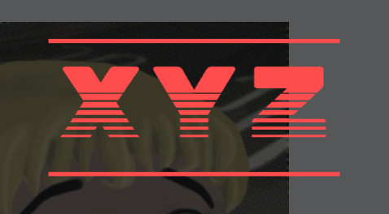
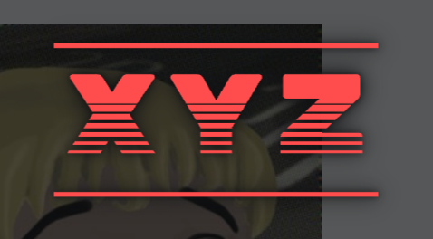
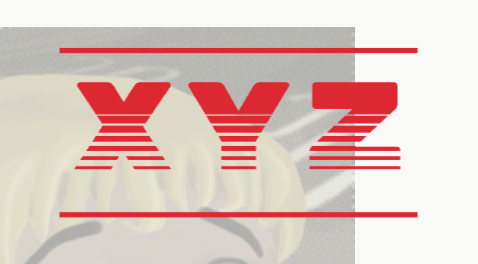
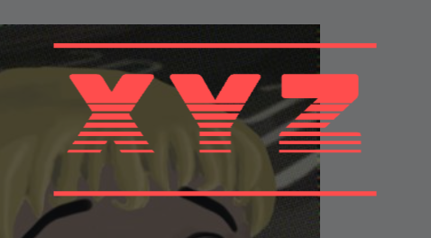
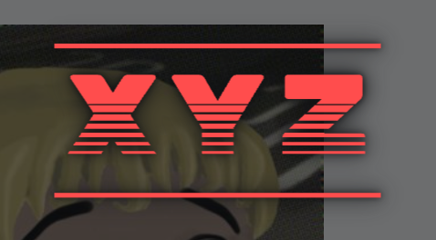
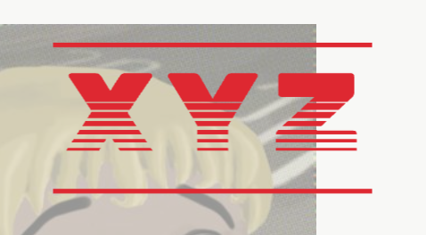
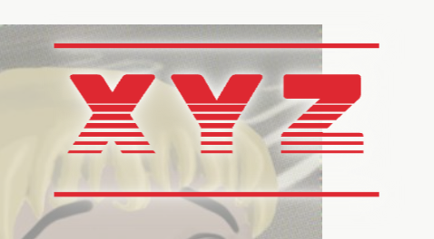
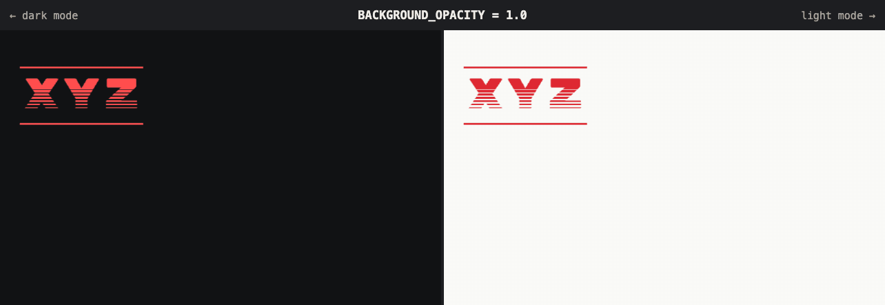

Screensaver opacity
The alexkan.xyz idle screensaver recorded at every BACKGROUND_OPACITY from 1.0 down to 0.0. Each clip shows dark mode on the left and light mode on the right, and every clip starts from the same spot, so the background is the only thing that changes. The halo test compares 0.7 and 0.6 with and without a glow around the logo.
- Chosen value
- 0.6 with halo
- Set in
- public/assets/screensaver.js
- Playback
- Real speed, 15 fps
Halo test
A soft glow in the screensaver's background color around the logo, so the letters sit on the background their colors were chosen for. Without it, at 0.7 red, magenta and violet drop to about 2.5:1 in dark mode, below the 3:1 a graphic needs to stand out.
In each clip the top half has no halo and the bottom half has it; both halves move in sync.
Close-up over the photo
The hardest spot for the logo: the red letters over the dark parts of the homepage photo, at twice the resolution.
0.7

Dark, no halo

Dark, halo

Light, no halo
Light, halo
0.6

Dark, no halo

Dark, halo

Light, no halo

Light, halo
1.0 to 0.0 in one run
Each level plays for 1.6 seconds without restarting, so the logo keeps moving while the background steps down.

All eleven clips
Select a clip to open it under Compare levels.
Recorded in headless Chromium on the homepage at 640 × 400 per theme. Every clip starts with the red logo near the top left, heading down and to the right, and changes color at each edge it hits.